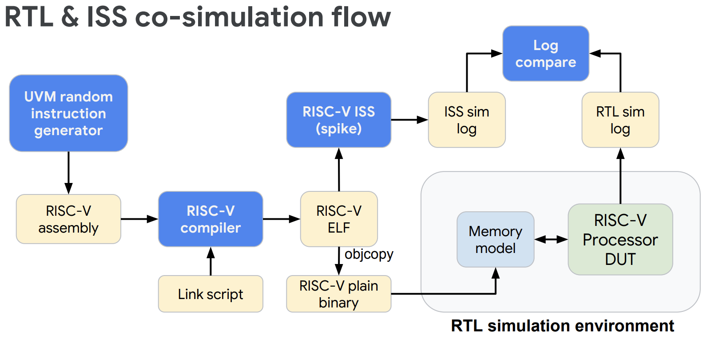
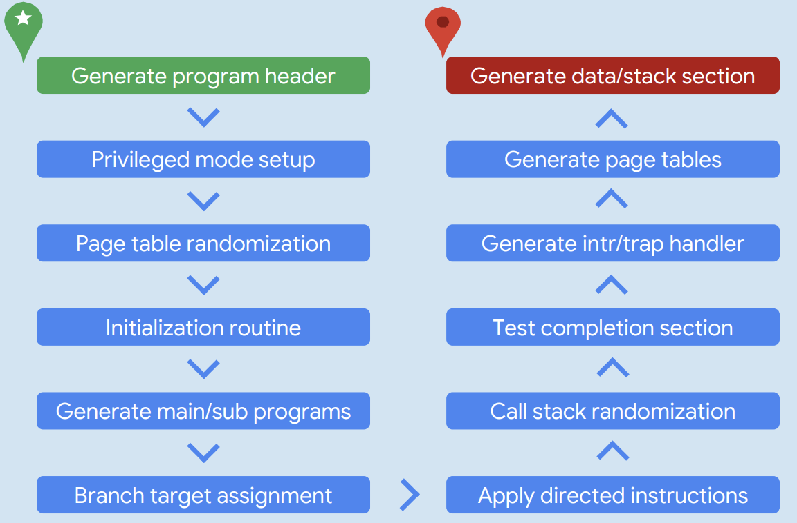
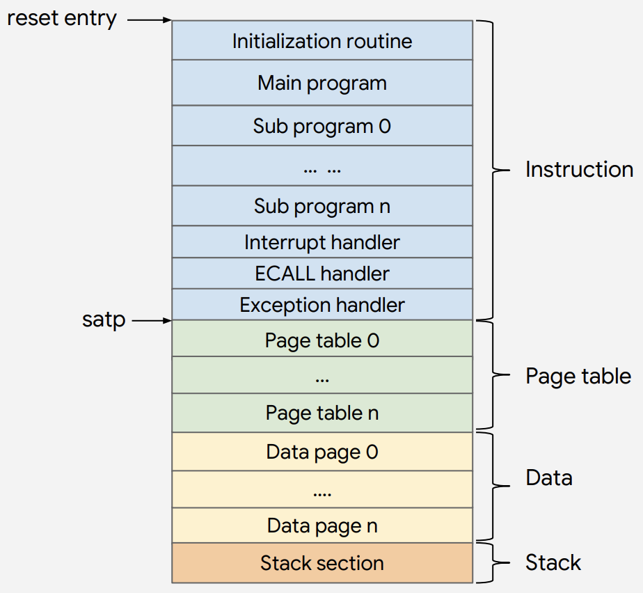

[RISC-V Architecture Training] @DEMO: Verification suite
riscv-tests
- Unit tests based on assembly
- Basic functionality of each RISC-V instructions and features defined in the spec
- Very good staring point to find basic implementation issues
- Software BIST (built-in self test)
- Compare architecture states with expected results
- Issue pass/fail signal to host machine
- Official compliance tests
riscv-tests / TVM (test virtual machine)
- Because RISC-V is very scalable, so it has many variants
- E.g. 32-bit vs 64-bit, different ISA subsets support, different privilege levels support
Use different TVM to define RISC-V variants
- Registers (GPR, FPR) and instruction sets
- Memory access pattern
- How to enter/exit test program
- How to do input/output in test program
Some available TVM
| TVM Name | Description |
|---|---|
rv32ui |
RV32 user-level, integer only |
rv32si |
RV32 supervisor-level, integer only |
rv32mi |
RV32 machine-level, integer only |
rv64ui |
RV64 user-level, integer only |
rv64uf |
RV64 user-level, integer and floating-point |
rv64uv |
RV64 user-level, integer, floating-point, and vector |
rv64si |
RV64 supervisor-level, integer only |
rv64sv |
RV64 supervisor-level, integer and vector |
riscv-tests / target environments
- Despite of TVM, there is also target environment that defines implementation related factors
- Virtual memory
- Multi-core
- Time interrupt
- Target environments
| Target Environment Name | Description |
|---|---|
p |
virtual memory is disabled, only core 0 boots up |
pm |
virtual memory is disabled, all cores boot up |
pt |
virtual memory is disabled, timer interrupt fires every 100 cycles |
v |
virtual memory is enabled |
pis the mostly used and supported
riscv-tests / how to use TVM?
- Select the correct target enviroment according to your implemenation
- Pick all the TVMs that fits your implemenation
- E.g. 32-bit bare-metal MCU that supports IM
rv32mi-p-*&rv32ui-p-*&rv32um-p-*
- E.g. 64-bit full-blown single-core AP that supports IMACFD and Linux
rv64mi-p-*&rv64ui-v-*&rv64um-v-*&rv64uf-v-*&rv64ud-v-*&rv64ua-v-*&rv64uc-v-*&rv64si-p-*
.center[As we can see, riscv-tests are also scalable]
riscv-tests / demo
- ISA test source code for target env
p- Source code:
~/riscv-git/riscv-tools/riscv-tests/isa/rv64ui/addi.S - Header file:
~/riscv-git/riscv-tools/riscv-tests/env/p/riscv_test.h- And linker script:
~/riscv-git/riscv-tools/riscv-tests/env/p/link.ld
- And linker script:
- Objdump:
~/docker/riscv/riscv-tools/riscv-tests/isa/rv64ui-p-addi.dump
- Source code:
- ISA test source code for target env
v(with virtual memory)- Header file:
~/riscv-git/riscv-tools/riscv-tests/env/v/riscv_test.h- Entry assembly:
~/riscv-git/riscv-tools/riscv-tests/env/v/entry.S
- Entry assembly:
- Header file:
riscv-torture
https://github.com/ucb-bar/riscv-torture
- Random test generator from UC Berkeley
- Generate random instruction sequences
- Use SPIKE simulator to generate golden reference architecture states
- Automatic compare, then determine pass/fail
- Pros & cons
- Support selecting ISA extension and instruction
- Written in Scala (slow and poor compatibility), need internet connection
- The program structure is too simple
- Lack of complicated program sequence verification
- Lack of switching between privilege modes
- Has not updated for a very long time
riscv-dv
https://github.com/google/riscv-dv
- Open-source instruction generator from Google
- Based on SystemVerilog and UVM
- Industry standard verification language and framework
- Other engineers can understand and extend
- It’s not a one-man project
- Support SV based coverage
- Industry standard verification language and framework
- Use SPIKE simulator as golden reference
riscv-dv / simulation flow

riscv-dv / interesting features
Randomize everything
-
3 levels of randomness
- Instrution-level
- Cover all instructions
- Sequence-level
- Instruction orders and dependencies
- Program-level
- Privileged modes switching, page table, system calls
- Instrution-level
-
Difficulties
- Branch/jump
- Valid target?
- Avoid infinite loop
- Load/store
- Valid base address
- Extra instruction to setup base address
- CSR access
- Most CSRs have implications, cannot be randomly changed
- Some CSRs are implementation-specific, so not 100% match SPIKE behavior
- Call stack
- Randomly generated function calls can easily form infinite loop
- Page table
- Exception injection
- Branch/jump
Architecture aware
- Need to know certain level of implementation/architecture details to target specific corner cases
- E.g.
- Branch prediction
- TLB
- Cache
- Multi-issue
Performance
- Why? Because this is usually the bottleneck when use FPGA to emulate CPU.
riscv-dv
Generator flow

memory map

riscv-dv / limitations
- Only support RV64IMC & RV32IMC
- Lack of various ISA subsets support
- Only support commercial RTL simulator